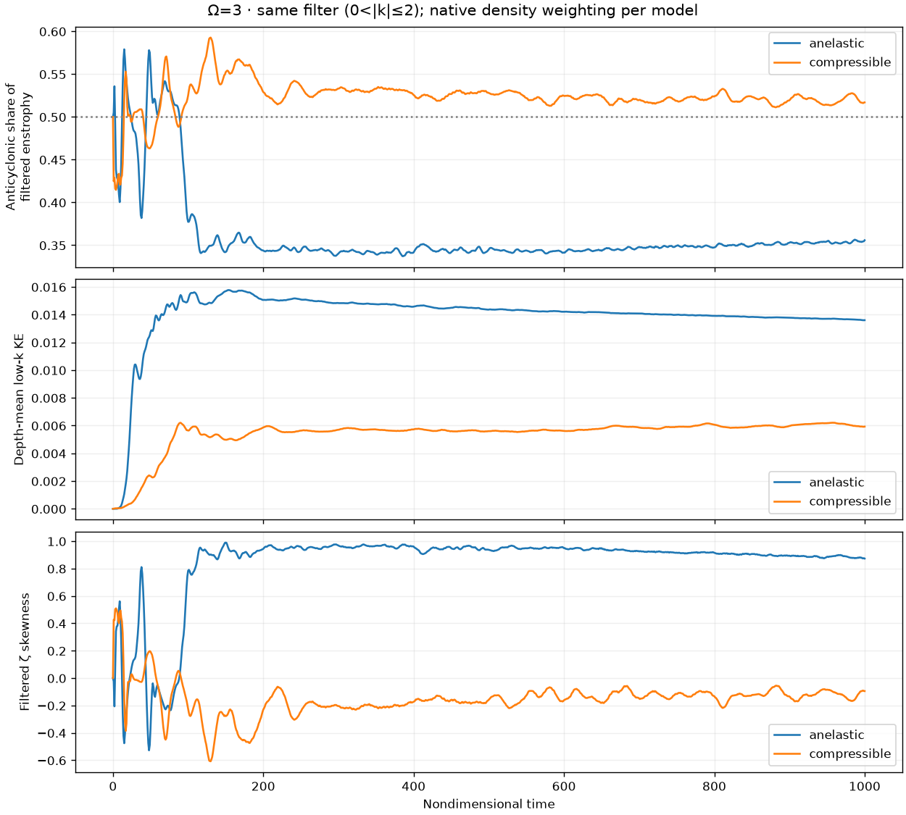
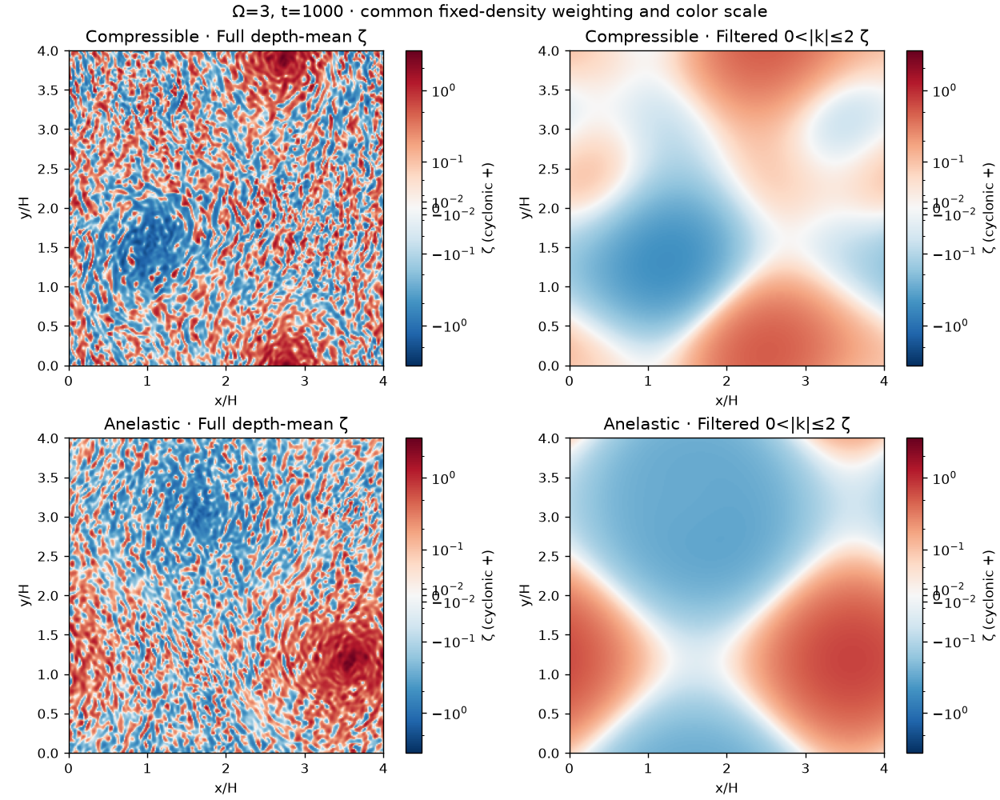

Completed on Unity · Ω=3 · t=0–1000
The anelastic case has a stronger cyclonic large-scale bias
Both runs retain vortices of both signs. The anelastic run develops a stronger compact cyclone and a broader, weaker anticyclonic region. The compressible run retains a broad anticyclone and a compact cyclone, with nearly balanced large-scale signed enstrophy. This is a change in relative strength, not elimination of either sign.
The anelastic run completed t=1000 successfully in 3 hours 19 minutes on a Unity A100 80 GB (job 2113514). CPU/GPU restart checks passed; the full movie below includes all 1001 integer-time frames. Time is nondimensional, not Earth days.
Anelastic Ω=3
Compressible Ω=3 — original reference
Each movie: vorticity above passive tracer, at z/H=0.19375, 0.49375 and 0.89375. Positive ζ is cyclonic. The synchronization button compensates for different encoding rates (20 versus 10 frames/s) to align simulation time. Individual movies have different fixed color limits; use the common-scale figure below to compare amplitudes. The new tracer movie uses fixed absolute-concentration asinh width 0.01 and range 0–1.
Late tracer panels have weak contrast on the fixed 0–1 scale: at t=1000, each slice spans only about 0.0017–0.0020 in concentration. The remaining gradients are real, but small; the field is not exactly uniform. Saved concentration ranges and standard deviations.
What changed?
| Mean over t=950–1000 | Anelastic | Compressible |
|---|---|---|
| Anticyclonic share of filtered enstrophy | 35.4% | 52.0% |
| Filtered vorticity skewness | +0.886 | −0.121 |
| Filtered cyclonic peak | 0.719 | 0.521 |
| Filtered anticyclonic peak magnitude | 0.349 | 0.545 |
| Low-wavenumber depth-mean kinetic energy | 0.01366 | 0.00607 |
Filter: horizontal integer Fourier radius 0<|k|≤2. Enstrophy share measures squared filtered vorticity in negative-valued regions, not area or the circulation of one tracked vortex. Positive skewness favors concentrated cyclonic vorticity. These metrics do not establish an inverse energy-transfer budget.

The separation appears by about t=100 and persists to t=1000. Recomputing both depth means with the same fixed reference-density weights at t=960,980,1000 leaves the distinction intact: the anticyclonic enstrophy share is about 35% versus 52%. Thus it is not simply a consequence of using different density weights in the diagnostic.

Common weights and color scale at t=1000. Opposite edges are connected periodically; a cyclone crossing an edge is one structure, not two separate vortices.
What this says about compressibility
The result supports sensitivity of vortex-sign preference to the equation set at fixed rotation, stratification and forcing configuration. It does not demonstrate that acoustic waves cause the difference. Anelastic dynamics retains expansion through stratification, but changes pressure/buoyancy dynamics and prevents evolution of the reference density. The thermodynamic initialization differs as documented below, and the compressible energy budget remains unresolved. One pair of realizations cannot establish a unique mechanism or a robust transition boundary.
What is matched?
| Geometry and resolution | 4×4×1 box; 256×256×80; x/y periodic; impermeable, stress-free top and bottom. |
|---|---|
| Rotation | Ω=3, full constant rotation vector at 67.5°N; f=5.5433. No β or imposed shear. |
| Reference state | Exact discrete pressure and density profiles copied from the compressible model; same stable cap above z/H=0.78. |
| Initial fields | Identical face velocities, potential temperature/specific entropy and passive tracer, to roundoff. Same mixed-sign eddies and RMS speed 0.136. |
| Heating and transport | Bottom flux 0.03125, the original conduction and cap cooling, Smagorinsky coefficient 0.16, Pr=1/3, entropy diffusion, deviatoric stress and viscous heating. Density factors take their anelastic reference-density form. |
The comparison has a real limitation
Pressure and density perturbations cannot also be held fixed when switching equations. With identical entropy, the initial temperature differs by 5.13% volume RMS (3.16% mass-weighted RMS), reaching 28.8% locally. The original compressible pressure perturbation reaches 67.9% of the reference locally. This is a finite-amplitude model comparison, not a controlled small-perturbation limit or an acoustics-only switch.
At t=5 the anelastic kinetic energy is 7.5045, versus 7.3022 in the compressible run at t=5.0038: a 2.8% difference. Peak Mach numbers are 0.580 and 0.603, respectively. The anelastic weighted-divergence residual stays below 1.4×10⁻¹⁵ after normalization. These are startup and implementation checks, not evidence for or against an LSV.
The completed anelastic case does retain an anticyclonic region, but its large-scale statistics are more cyclonic. Thermodynamic mapping, pressure/buoyancy approximations and numerical differences must therefore be assessed before assigning an acoustic cause.
Low Mach number alone need not guarantee anelastic fidelity in rapidly rotating convection; the onset results of Calkins, Julien & Marti (2015) motivate caution, but do not by themselves invalidate this turbulent experiment.
Original t=0–5 validation pilot
Validation and records
CPU and GPU restart differences were zero. The native heating conversion, entropy-flux equivalence and hydrostatic-rest checks passed. The long-run physical model is identical to the validated pilot; only duration, restart and output scheduling change. No total-energy closure is claimed.
Completed analysis and common-weight checks · Full movie validation · Anelastic diagnostics · Compressible diagnostics
Original compressible Ω=3 movie through t=1000 · Pilot audit · Movie validation and scales · Pilot source · Continuation source